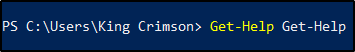
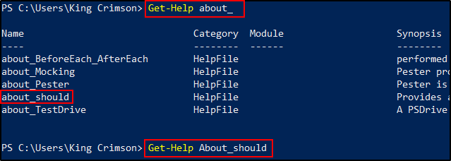

Che cos'è la Powershell?
Permette l'accesso a quasi tutto sia disponibile su Windows ed Active Directory Enviroment.
Una componente molto importante è quella di eseguire script in memoria, rendendolo molto efficace per shell e boxes.
E' molto facile da imparare.
E' basata sul framework .NET ed è integrata a stretto contatto con Windows.
E' possibile usare una Powershell oppure un Powershell Core indipendente dalla struttura.
Nel framework .NET, è considerato come System.Management.Automation DLL in .NET framework!
Opzioni utili per la Powershell:
Get-Help:
Get-Help è usato per ottenere informazioni riguardo un comando
Esempio: Get-Help dir

Per saperne di più usa Get-Help... su Get-Help!
Esempio: Get-Help Get-Help

Puoi usare Get-Help e l'opzione About_<topic> per saperne di un topic:

Permette di ottenere informazioni su un cmdlet (command-let) o topic.
Un cmdlet è un comando del tipo "Get-Help", questa forma qua.
E' un mini-script già compilato in .NET e messo in forma di comando.
Supporta le wildcard ed altre opzioni.